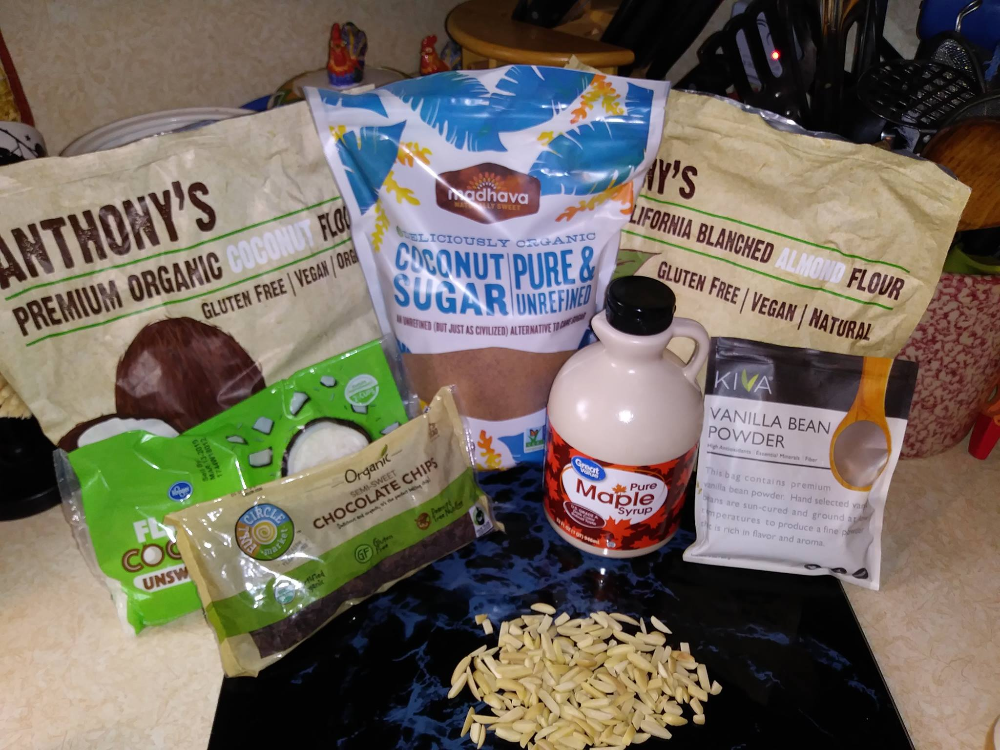
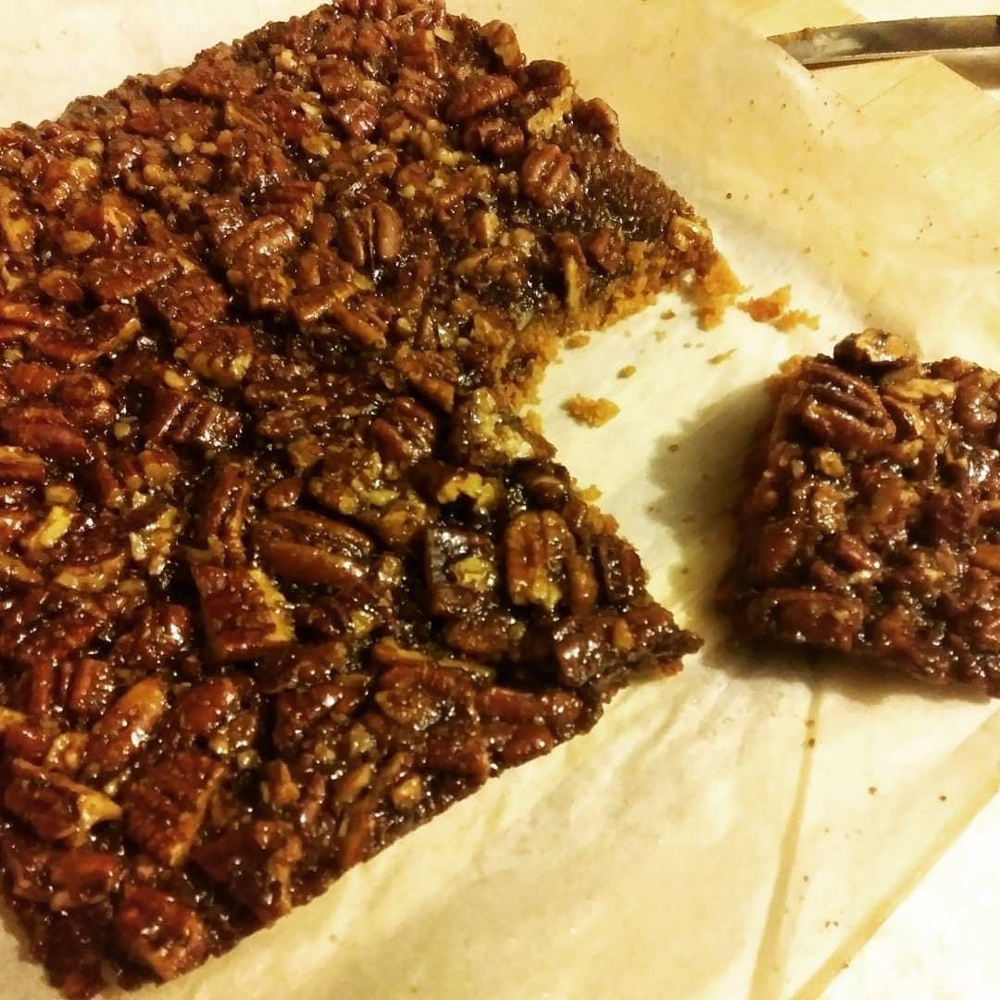
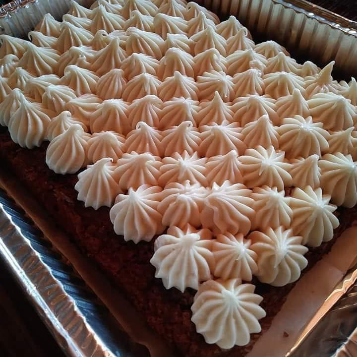
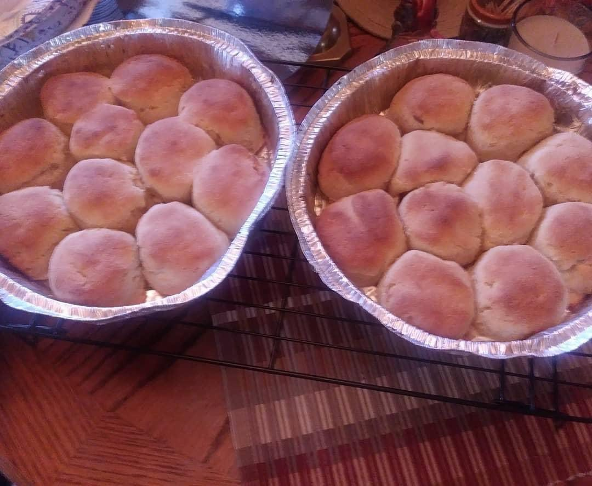
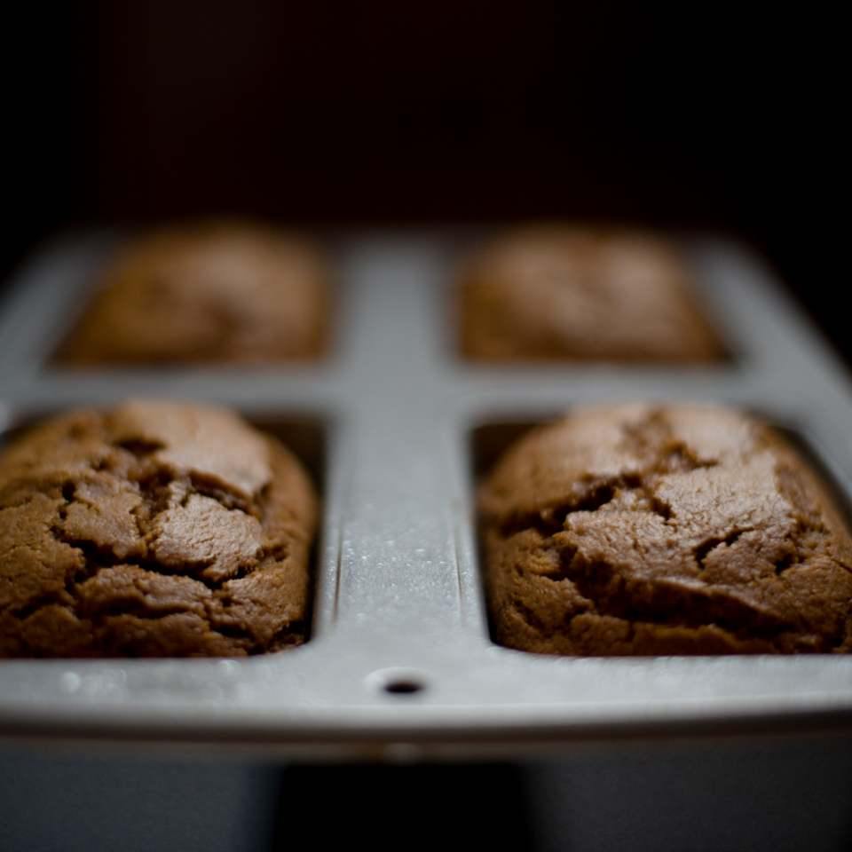

The Heart of the Kitchen
Every single item at Alisha's is hand-mixed and baked with meticulous care. We don't believe in shortcuts; we believe in the magic of small-batch baking that brings people together around the table.
Artisanal • Small Batch • 100% Gluten Free
I suffer from gluten allergies, and through years of testing different gluten free flours and healthy organic products, I have perfected the best baked goods this side of the Mississippi. At Alisha's Gluten Free Goodies, we believe everyone deserves delicious baked treats. Each item is homemade with care and precision using gluten-free ingredients so that people with gluten sensitivities can still enjoy amazing baked goods.

Every single item at Alisha's is hand-mixed and baked with meticulous care. We don't believe in shortcuts; we believe in the magic of small-batch baking that brings people together around the table.

We use premium blanched almond flour, organic coconut flour, and pure maple syrup. Our goodies are gluten-free, with dairy-free, soy-free, and egg-free options that never compromise on rich, decadent flavor.

Dense, moist, and bursting with plump, juicy blueberries in every bite. Our signature loaves offer a perfect crumb and the natural sweetness of ripe bananas. It's the ultimate comfort food for any time of day.

Experience a flaky, golden-brown crust filled with tender, cinnamon-spiced apples. This is a pie so authentic and flavorful, you'll forget it's completely gluten-free. Perfect for your next holiday celebration or family dinner.

A buttery shortbread base topped with a thick, sticky layer of caramelized pecans. These bars are chewy, decadent, and the perfect bite-sized way to satisfy your sweetest cravings.

Warm spices meet our velvety signature frosting. This cake is incredibly moist and packed with flavor, designed for those who want a premium dessert experience without the gluten.

Golden, soft, and ready to be slathered in butter. These rolls are the perfect addition to your table, providing that classic bread texture that everyone loves.

Moist and aromatic, our pumpkin bread is seasoned with a proprietary blend of warm autumn spices. It's a seasonal favorite that tastes like home in every slice.

Make your milestones memorable with a custom-designed cake. From intricate buttercream roses to festive holiday themes, we create beautiful, safe desserts tailored to your special day.
Serving our neighbors in SW Virginia and NE Tennessee. Call or text us to place your order.
(276) 690-6909 Click here to visit us on Facebook for more info on Gluten Free baked goodies and to make sure you don't miss a thing!